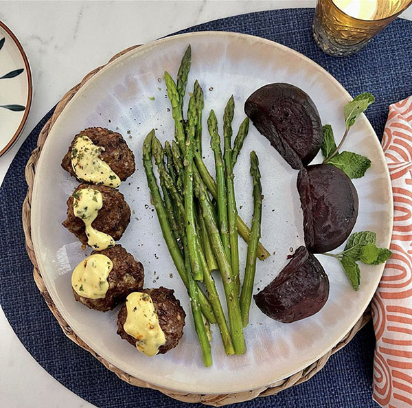

Lamb Meatballs

Meatballs ... a classic!
Meatballs are a classic recipe that everybody loves.
This meatball recipe is inspired by Greek cuisine.
Adding onion, cloves, oregano, pepper, and mint
helps to fight inflammation and reduce histamine
while nourishing your body.
Yield: 4-6 servings
Ingredients:
- 1 pound ground lamb
- 1 small onion, diced finely
- 2 garlic cloves, minced
- 1/2 teaspoon dried organo
- 1 tablespoon fresh mint, chopped plus extra for garnish
- 1 teaspoon salt
- 1/4 teaspoon pepper
- 1 small egg, beaten
- 3 tablespoons almond flour (or tapioca flour)
Directions:
- Combine all ingredients in a medium bowl and mix well with
hands until thoroughly combined.
- Break off golf ball-sized pieces and roll them into balls,
placing them into the air fryer as you go. Cook only in a
single layer, working in batches if needed.
- Cook at 375 for 6 minutes, then shake and cook for an
additional 3-4 minutes until meatballs have browned nicely
on the outside.
Back Home